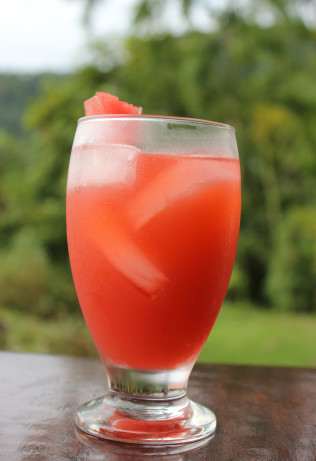
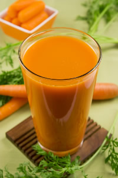

FREE Juice Recipes from Jason Vale
2021.06.18 12:40
Get Social With Us
| SEARCH | SHOP Shop Juicers and Blenders Juicing Apps & Books Supplements Healthy Snacks Rebounding Flasks Jason Vale Apps Juice & Blend Diets 3-Day Juice Diet 5-Day Juice Diet 7-Day Juice Diet 7-Day Soup ‘N’ Juice 5:2 Juice Diet 14/28-Day Super Juice Me! Diet Super Blend Me! Smoothie Diet Super Fast Food 7-Day Plan 7-Day Juice & Blend Diet Jason Vale Skin Programme Juicers and Blenders Juice Master Cold Press Juice Master Super Blend Retro Super Blend Juicy Lifestyle Why Juice Choose The Best Juicer For You Cold Press Vs Centrifugal The Benefits of Wheatgrass Free Downloads Overview Free Recipes All Recipes Juice Recipes Smoothie Recipes Soup Recipes Healthy Food Recipes Juice Recipes For Kids Vegetarian Recipes Vegan Recipes Gluten Free Recipes Free Recipe Download Jason Vale Skin Programme My Account Terms & Conditions Policy Privacy Shop Juicers and Blenders Juicing Apps & Books Supplements Healthy Snacks Rebounding Flasks Jason Vale Apps Juice & Blend Diets 3-Day Juice Diet 5-Day Juice Diet 7-Day Juice Diet 7-Day Soup ‘N’ Juice 5:2 Juice Diet 14/28-Day Super Juice Me! Diet Super Blend Me! Smoothie Diet Super Fast Food 7-Day Plan 7-Day Juice & Blend Diet Jason Vale Skin Programme Juicers and Blenders Juice Master Cold Press Juice Master Super Blend Retro Super Blend Juicy Lifestyle Why Juice Choose The Best Juicer For You Cold Press Vs Centrifugal The Benefits of Wheatgrass Free Downloads Overview Free Recipes All Recipes Juice Recipes Smoothie Recipes Soup Recipes Healthy Food Recipes Juice Recipes For Kids Vegetarian Recipes Vegan Recipes Gluten Free Recipes Free Recipe Download Jason Vale Skin Programme 0No products in the basket.
JASON VALE JUICE RECIPES
What better way to start your day than with a Jason Vale juice recipe. Within 15 minutes of drinking one of these babies you’ll absorb all of the goodness each of these healthy juice recipes have to offer. Here you’ll find some of the best and tastiest FREE juice recipes !
RUBY TUESDAY
Juice all the ingredients but make sure you sandwich the basil and ginger
14 medium Pineapple, 2 medium Carrots, 1 small bulb of raw beetroot, 1-2cm chunk root ginger, 4 sprigs fresh Basil, 1 Small Handful Of Ice.
VIEW THE FULL RECIPEJuice Or Blends?
All / Juices / Smoothies / Soups / Healthy Food / Kids Recipes / Vegetarian / Vegan / Gluten Free
SHARE ME: Share on Facebook Share on Twitter Share on PinterestPure Green Super Juice Recipe
All Recipes, Juices
Jason Vale’s Thai Spice Super Juice
All Recipes, Gluten Free, Healthy food, Juices, Vegan, Vegetarian
Easy Peasy Lemon Squeezy Juice Recipe
All Recipes, Juices
Minty Sunshine Juice Recipe
All Recipes, Gluten Free, Juices, Vegan, Vegetarian
Ease The Pressure Juice Recipe
All Recipes, Juices, Recipe Download, Vegetarian
Detox Special Juice Recipe
All Recipes, Gluten Free, Juices, Vegan, Vegetarian
Sunset Sparkle Juice Recipe
All Recipes, Gluten Free, Juices, Vegan, Vegetarian
Ginger Shot Recipe
All Recipes, Gluten Free, Juices, Vegan, Vegetarian
Green Refresher Juice Recipe
All Recipes, Gluten Free, Juices, Vegan, Vegetarian
Ruby Tuesday Juice Recipe
All Recipes, Gluten Free, Juices, Vegan, Vegetarian
Juice Master’s Hot ‘n’ Spicy Juice Recipe
All Recipes, Gluten Free, Juices, Vegan, Vegetarian
Sherbet Lemonade Juice Recipe
All Recipes, Gluten Free, Juices, Vegan, Vegetarian
Jason Vale’s Pearfection Juice Recipe
All Recipes, Gluten Free, Juices, Vegan, Vegetarian
Super Chute Juice Recipe
All Recipes, Gluten Free, Juices, Vegan, Vegetarian
Dreamy Detox Juice Recipe
All Recipes, Gluten Free, Juices, Vegan, Vegetarian
Boost Juice Recipe
All Recipes, Gluten Free, Juices, Vegan, Vegetarian
Lemon Ginger Zinger Juice Recipe
All Recipes, Gluten Free, Juices, Vegan, Vegetarian
Natural Energizer Juice Recipe
All Recipes, Gluten Free, Juices, Recipe Download, Vegan, Vegetarian
Kids’ Veggie Special Kids Recipe
All Recipes, Gluten Free, Juices, Kids Recipes, Vegan, Vegetarian
FREE RECIPE EBOOK DOWNLOAD!
Sign up and you will receive 10 of our favourite Juice & Smoothie recipes in a FREE eBook
Shop Categories
Juicing Apps & Books Juicers & Blenders Supplements Flasks Healthy Snacks Rebounding Which JuicerJason’s Juice Plans
Compare Plans 3-Day Diet 5-Day Diet 7-Day Diet 28-Day Super Juice Me! Diet 5:2 Diet Soup ‘n’ Juice Me! Diet Super Fast Food Diet Super Blend Me! Smoothie Diet Juice & Blend DietOur Recipes
All Recipes Juice Recipes Smoothie Recipes Soup Recipes Healthy Food Recipes Recipes For Kids Vegetarian Recipes Vegan Recipes Gluten Free RecipesJuice Master Services
Juice Master Retreats Juicy Mountain Retreat (Turkey) Juicy Oasis Retreat (Portugal) Juice Master Delivered Juice Master Academy Jason Vale Juice Tube Jason Vale Coaching Jason Vale OfficialSign up to our e-newsletter & receive a free recipe ebook
* PLEASE NOTE: The testimonials shared on JuiceMaster.com are applicable to the individuals depicted, and are not indicative of future performance or success of any other individuals. Your results may vary and Juice Master cannot guarantee any specific health or weight loss results. You should always seek the advice of your physician or another qualified, licensed professional regarding any medical condition you may have or suspect you have. Nothing contained on any of our company’s websites is intended to be a substitute for the medical diagnosis that can be provided by your physician. Home My Account View Basket Juicy FAQs Which Juicer? Policy Privacy Policy Delivery Terms & Conditions Contact Us About Jason Vale Facebook YouTube Instagram Spotify © 2021 Juice Master Ltd. Registered in England & Wales #07437294. We use cookies to ensure that we give you the best experience on our website. If you continue to use this site we will assume that you are happy with it :) Ok Read more We use cookies to ensure that we give you the best experience on our website. If you continue to use this site we will assume that you are happy with it :) Ok Read more- FREE Juice Recipes from Jason Vale - Juice Master
- Healthy Juice Recipes & Challenges | JuiceRecipes.com
- 21 Juicing Recipes for Healthy Mornings and Afternoon .
- Beginner Juice Recipe - Simply Jillicious
- Best Juicing Recipes for Beginners - Clean Eating Kitchen
- 20+ Juice Cleanse Recipes | Allrecipes
- Healthy Juicing Recipe Ideas : Food Network | Healthy .
- 6 Healthy Juicing Recipes for Cleanse, Detox, Weight Loss .
- Healthy Juice Cleanse Recipes – Modern Honey
- 8 Easy Juice Recipes to Get You Started Juicing | Wholefully
- FREE Juice Recipes from Jason Vale - Juice Master
- Healthy Juice Recipes & Challenges | JuiceRecipes.com
- 21 Juicing Recipes for Healthy Mornings and Afternoon .
- Beginner Juice Recipe - Simply Jillicious
- Best Juicing Recipes for Beginners - Clean Eating Kitchen
- 20+ Juice Cleanse Recipes | Allrecipes
- Healthy Juicing Recipe Ideas : Food Network | Healthy .
- 6 Healthy Juicing Recipes for Cleanse, Detox, Weight Loss .
- Healthy Juice Cleanse Recipes – Modern Honey
- 8 Easy Juice Recipes to Get You Started Juicing | Wholefully
 